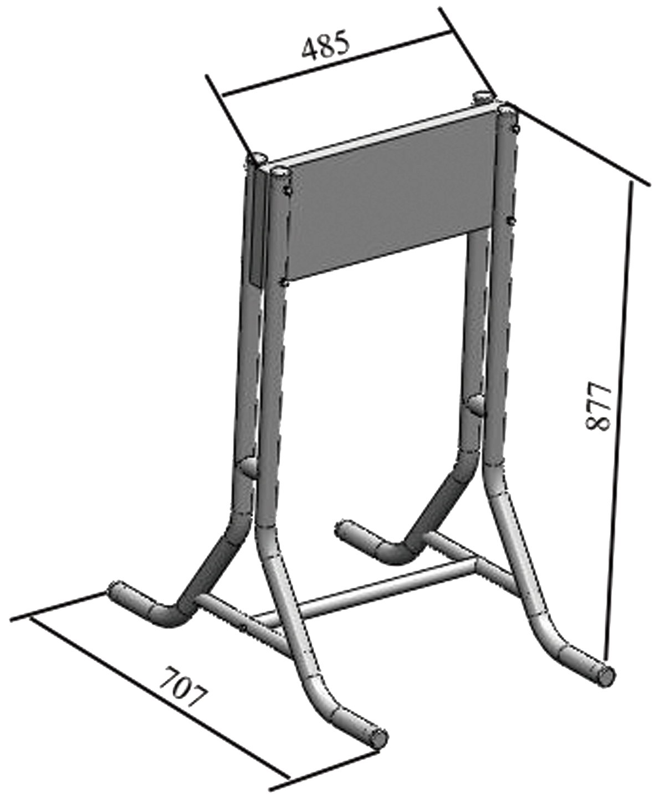
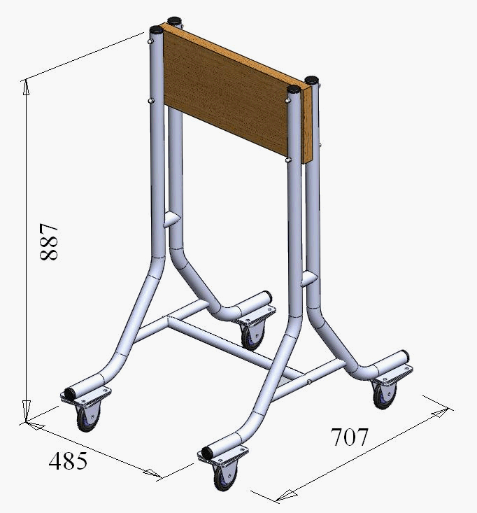
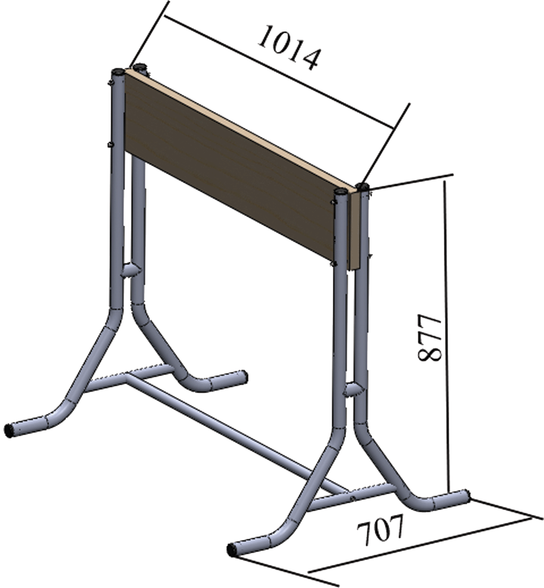
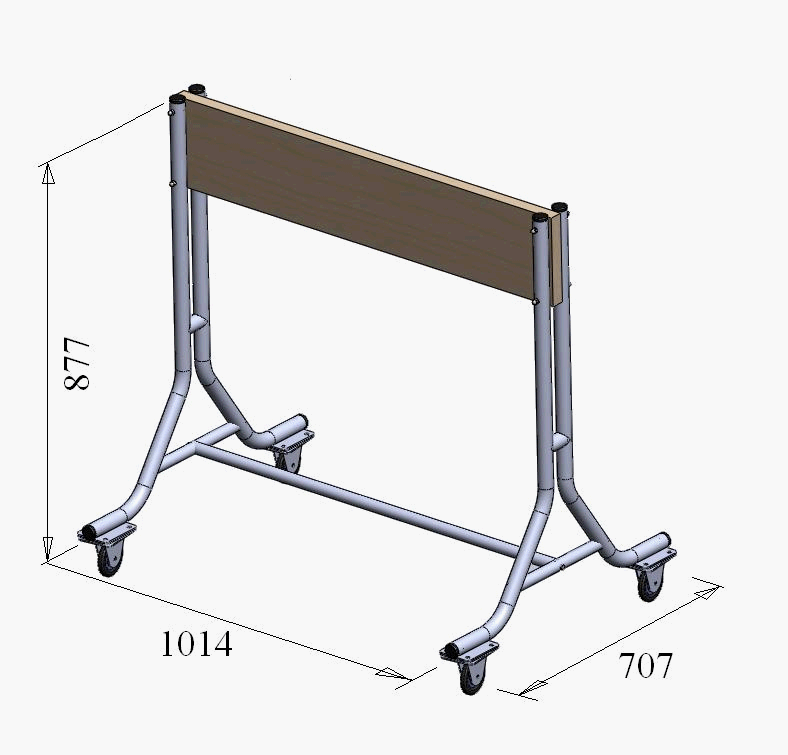
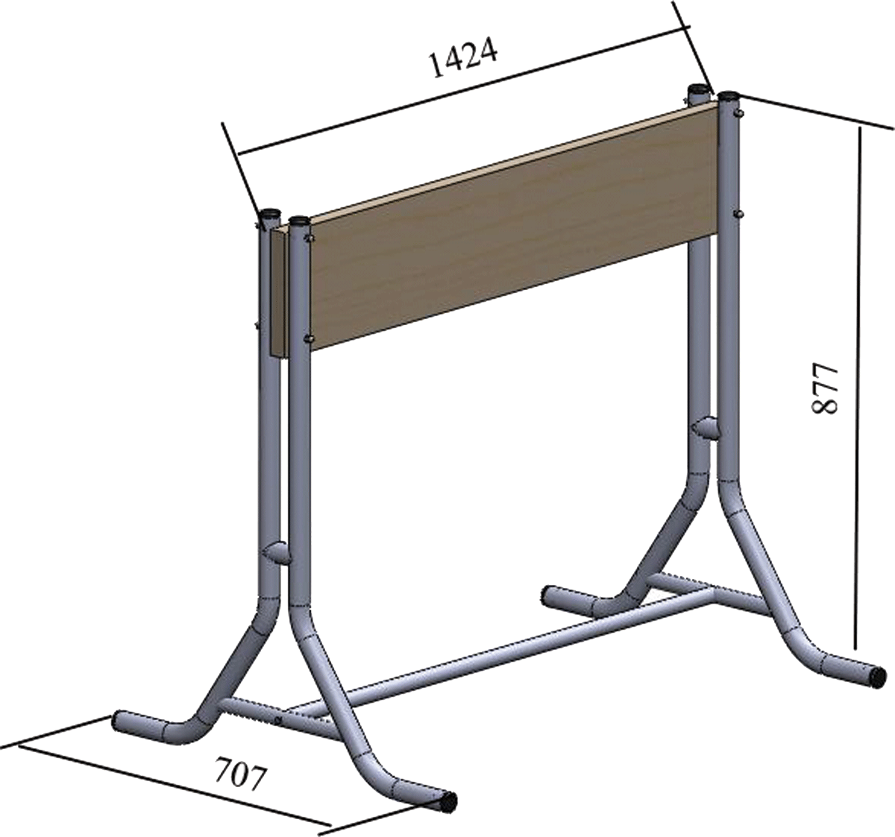
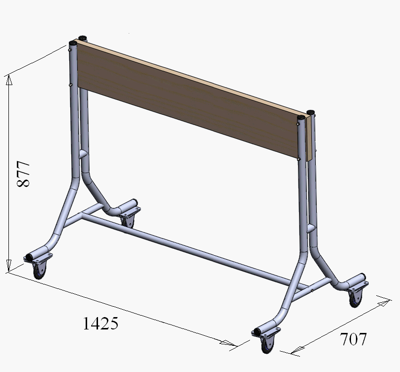
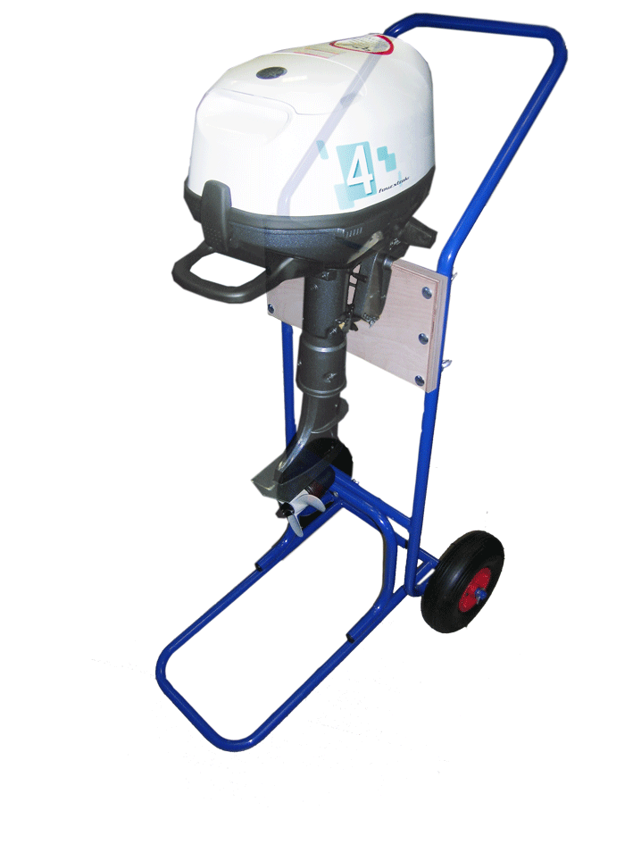
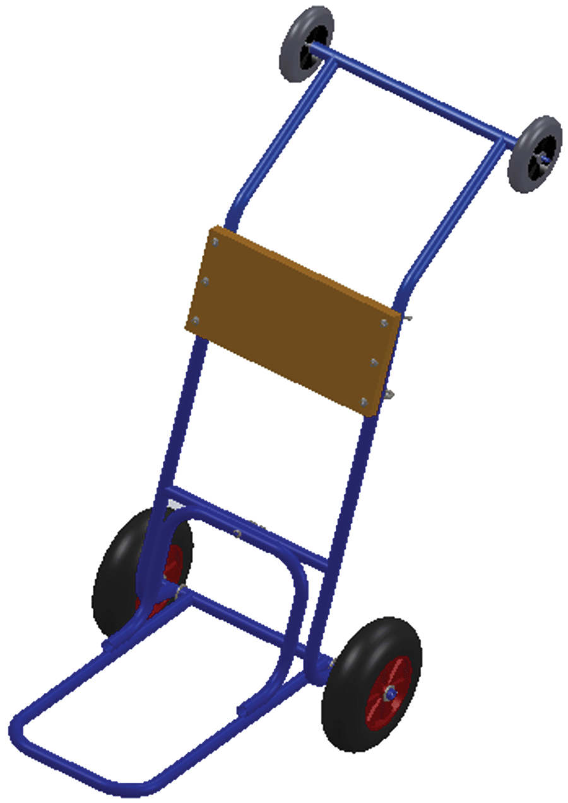

Стойки и тележки для двигателей

Стойка для 1-го ПЛМ
Стойка предназначена для размещения одного подвесного лодочного мотора в торговых залах, ремонтных зонах, выставочных павильонах. Изготовлена из стальной трубы, окрашенной порошковой краской. Страна происхождения - Россия.
Стойка для 1-го ПЛМ передвижная
Стойка предназначена для размещения одного подвесного лодочного мотора в торговых залах, ремонтных зонах, выставочных павильонах. Изготовлена из стальной трубы, окрашенной порошковой краской. Для легкости перемещения оснащена поворотными колесами со стопором. Страна происхождения - Россия.
Стойка для 2-х ПЛМ
Стойка предназначена для размещения двух подвесных лодочных моторов в торговых залах, ремонтных зонах, выставочных павильонах. Изготовлена из стальной трубы, окрашенной порошковой краской. Страна происхождения - Россия.
Стойка для 2-х ПЛМ передвижная
Стойка предназначена для размещения двух подвесных лодочных моторов в торговых залах, ремонтных зонах, выставочных павильонах. Изготовлена из стальной трубы, окрашенной порошковой краской. Для легкости перемещения оснащена поворотными колесами со стопором. Страна происхождения - Россия.
Стойка для 3-х ПЛМ
Стойка предназначена для размещения трех подвесных лодочных моторов в торговых залах, ремонтных зонах, выставочных павильонах. Изготовлена из стальной трубы, окрашенной порошковой краской. Страна происхождения - Россия.
Стойка для 3-х ПЛМ передвижная
Стойка предназначена для размещения трех подвесных лодочных моторов в торговых залах, ремонтных зонах, выставочных павильонах. Изготовлена из стальной трубы, окрашенной порошковой краской. Для легкости перемещения оснащена поворотными колесами со стопором. Страна происхождения - Россия.
Тележка для ПЛМ до 60л.с.
Тележка для мотора предназначена для хранения и транспортировки подвесных лодочных моторов мощностью до 60 л.с. Стальной каркас имеет съёмную рукоятку. Модель комплектуется двумя надувными колёсами PR1018 диаметром 254 мм. Страна происхождения - Россия. Вес - 15 кг, размеры в сложенном состоянии - 1х0.24х0.24 м.
Тележка для ПЛМ с доп. колесами
Тележка предназначена для транспортировки подвесных лодочных моторов. Отличается от аналога наличием двух дополнительных колёс на ручке, что облегчает погрузку двигателя в кузов автомобиля. Страна происхождения - Россия. Вес - 15 кг, размеры в сложенном состоянии - 1х0.24х0.24 м.